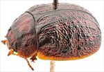
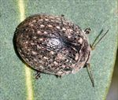
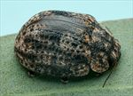
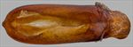
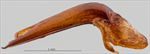
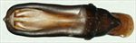
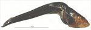
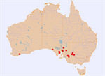

Click on images to enlarge
{kind=link}

Male, Brachina Gorge, Flinders Ranges, South Australia
{kind=link}

Female, Alawoona, South Australia
{kind=link}

Female, Mildura, Victoria
{kind=link}

Aedeagus, dorsal view (Brachina Gorge, Flinders Ranges, South Australia)
{kind=link}

Aedeagus, lateral view (Brachina Gorge, Flinders Ranges, South Australia)
{kind=link}

Aedeagus, dorsal view (Cowell, Eyre Peninsula, South Australia)
{kind=link}

Aedeagus, lateral view (Cowell, Eyre Peninsula, South Australia)
{kind=link}

Distribution
Name
Trachymela sp. Ta86
Reference specimen
2001-183, Brachina Gorge, Flinders Ranges, South Australia.
Adult Description
Length: ♂ (6.6)7.2–8.0 mm (n=12), ♀ 7.3–8.7 mm (n=32).
Colouration:
- Head: mid- to dark reddish-brown with clypeus and usually an area around antennal insertions and adjacent to eye black, rarely black areas extend further back as bands along central suture and near eyes, much less often black areas are reduced, very rarely black areas are almost absent, mandibles yellowish-brown with black tips, labrum yellow-brown; antennomeres 1–5 straw-brown, 7–11 similar or grading gradually to a very slightly darker shade.
- Pronotum: brown, concolorous with head, central part of disc, between inside edge of eyes, is surrounded by a black border that is usually irregular in thickness, often with segments, especially in posterior half, thinner or absent, rarely present only as short black lines running posteriorly from behind inside edge of eyes, very rarely completely absent, a small, round, raised black mark is present in centre of foveal area.
- Scutellum: dark brown, slightly or much darker than adjacent area of pronotum, sometimes completely black or at least bordered in black.
- Elytra: brown, concolorous with pronotum, a short black ridge extends posteriorly from base centred between scutellum and humeral callus and approximately continuing the black line on pronotum, a broad black band extends from just behind scutellum to just posterior to elytral summit, thinning posteriorly, and then continues as a thin black border to apex of suture, many small black verrucae scattered over almost the whole surface, these verrucae almost invariably align longitudinally to form four series, in posterior half these verrucae frequently join to form long, thin black ridges, other verrucae are scattered between these series, less often, verrucae just behind antero-median depression align to form a thin, interrupted transverse black ridge, a large raised black area is present just anterior to middle along margin of disc, punctures are fractionally darker than interstices, humeral callus black.
- Venter & Legs: head mid- to dark-brown to black, gula sometimes slightly paler, thoracic ventrites mid- to dark-brown, abdominal sternites similar or fractionally paler, inside surface of elytral epipleura brown along outer margin, usually much darker or black away from margin.
- Cuticular Wax: a layer of mid-brown to dark-brown that is fairly evenly to quite unevenly distributed over most of dorsal surface, small and much lighter-coloured, greyish dots or streaks are scattered over elytral surface in 3–5 longitudinally oriented rows situated between the (usually) dark rows of verrucae.
Morphology:
- Shape: considerably flattened (height = 37–48% BL), greatest height viewed laterally is around or a little in front of middle of elytral margin, thoracic ventrites usually extend to level with or just below elytral margin.
- Head: punctures moderately sized (pd ≈ 2×ef) and relatively evenly and densely distributed, much finer punctures are present on the interstices. Antennae short (AL/BL: ♂ 39–45%, ♀ 32–33%), filiform.
- Pronotum: almost evenly curved transversely, often with a slight explanation very close to lateral margin, foveal depression very shallow or absent with a marked round and lightly punctured elevated area in middle, discal area very slightly rugulose, sometimes partially bounded laterally by a slightly raised area, sometimes with a thin raised ridge along centre line, punctures clearly impressed and quite evenly and densely distributed in discal area, size similar or fractionally larger than those on head, much finer and inconspicuous punctures scattered among them, becoming coarser from foveal depression to lateral margins. Front margins join lateral margins in a smoothly rounded right-angle, with lateral margin curving smoothly and very gradually towards rear margin.
- Scutellum: punctured, punctures fractionally smaller than those on adjacent area of pronotum.
- Elytra: surface evenly curved transversely, very lightly curved longitudinally in anterior half, then more strongly curved, punctures large and distinct and relatively evenly distributed on anterior half, with much smaller punctures scattered sparingly on the interstices, many smooth, elevated verrucae, some with small central punctures are scattered over elytral surface (see colour above for arrangement), surface continuous under humeral callus; posterior third of marginal area prominently concave, separated from discal area by a row of small verrucae (often partially merged), with a similar but shorter and more widely spaced row usually present closer to elytral margin near apex. Vertical extension of epipleura small (HCE/PW = 0.31–0.34).
- Venter: prosternal process almost parallel-sided, less often narrowing very slightly anteriorly, closed anteriorly, short setae sparsely distributed over prosternal process, absent from mesoventrite, a single long seta on anterior and median trochanter; front edge of metaventrite beveled, rounded; posterior section of epipleura setose, setae most evident opposite 1st abdominal segment, often very sparse or even absent towards the elytral apex.
Male Genitalia (Aedeagus):
- Dimensions: moderate length (LPE/BL = 33–36%).
- Dorsal view: shaft broadening very slightly from basal sulcus to about middle of ostial depression from where sides converge towards apex in a smooth arc, gradually at first and then more strongly, dorsal surface with well-defined dorso-median channel and dorsolateral channels resulting in two long dorsal ostial processes projecting towards apex in the tear-shaped ostial depression, but terminating just behind the very long spatula; tip small and smoothly triangular.
- Lateral view: shaft curved sharply through about 60° near basal sulcus then ventral surface almost straight to apex, dorsal surface straight for about half this distance, then converging evenly towards ventral surface, tip deflexed.
Immature Stages
Unknown.
Similar species
- Ta87: It can be difficult to distinguish these two species – they are often found together in areas where both occur. Specimens of Ta87 are on average slightly smaller, though there is considerable overlap in the size distributions. There is a difference in the form and distribution of the verrucae in the posterior half of the elytra. Those of Ta87 are larger, more elevated and much less likely to be in longitudinal series, even less so as joined longitudinal ridges. The broad, black area adjacent to the elytral suture between scutellum and greatest height is absent or very reduced in Ta87. Ta87 lacks setae on the inner epipleural surfaces, but those on specimens of Ta86 are sometimes very scattered and short and can be difficult to make out. The aedeagi of the two species are very similar in shape, but that of Ta87 is about 8% shorter in similar-sized specimens.
- Ta88: A species that is very similar in general appearance to Ta86, but can be distinguished by its possession of a large quadrate black patch behind each eye, the brown inner epipleural surface and the greater extension of the elytra below the humeral callus (HCE/PW > 0.35).
Notes
- Taxonomy: Ta86, Ta87, and Ta88 are morphologically very close, theit distributions overlap extensively and many intermediates exist that can be difficult to place into one or the other species.
- Distribution & Abundance: Ta86 is found in the mallee regions of Victoria, southern New South Wales, South Australia and Western Australia. There is little to differentiate two female specimens from Western Australia from typical specimens in eastern Australia, though both lack any sign of rows of paler-coloured cuticular wax.
- Host Associations: Most specimens of Ta86 have been collected from Eucalyptus (Symphyomyrtus: Adnataria), including Eucalyptus porosa (n=4), E. odorata (n=5), and E. largiflorens (n=1). A few specimens are recorded from E. calycogona (n=2), as well as the river red gum, E. camaldulensis (n=2). One of the specimens from Western Australia was found on Eucalyptus thamnoides (Symphyomyrtus: Bisectae).
- Morphological Variation: There is considerable doubt about the placement of two female specimens from near Pooncarie in SW New South Wales in this species, due to slight differences in the texture of the elytra and the larger values of HCE/PW. Specimen [2017-183b] from Quorn is clearly not Ta86, despite being very similar in dorsal and ventral colouring and sculpture; its HCE/PW ratio is well outside the range for that species, while its aedeagus is considerably narrower and has a shorter spatula. The same is true for [2017-098] from Cowell. The small male [2017-182c] from Quorn is also unlikely to belong to this species.
Copyright © 2026. All rights reserved.